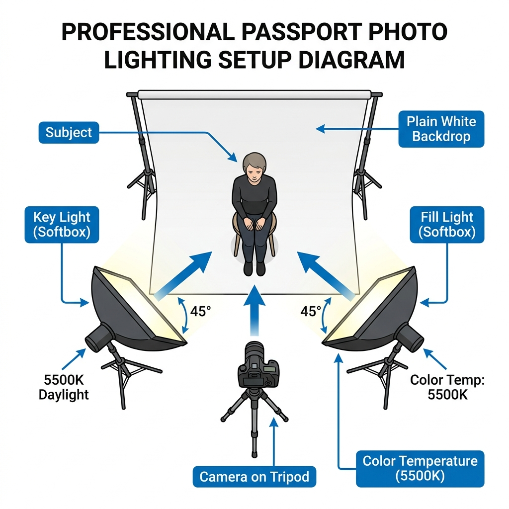

Taking your own passport or visa photos at home is an excellent way to save money and ensure you actually like the final photo (unlike those rushed, unflattering shots taken at retail print shops). But government agencies are notoriously strict: **over 40% of DIY passport photos are rejected due to poor lighting, shadows, or uneven skin exposure**.
You don't need professional studio strobes to get accepted. By mastering a few simple, natural-lighting tricks and smartphone camera settings, you can capture a studio-quality portrait in minutes.

Historical Context & The Rise of Biometric Standards
To appreciate why passport photo lighting is regulated so stringently today, it is helpful to examine the historical trajectory of travel documents. In the 19th and early 20th centuries, passports were simple paper certificates lacking any photographic representation. They relied on handwritten physical descriptions—detailing eye color, nose shape, and distinguishing marks. The introduction of physical photographs in the 1910s brought a degree of human verification, but for decades, these images remained largely non-standardized. Travelers could submit artistic studio portraits, casual snapshots, or heavily retouched photographs, provided they bore a reasonable likeness.
The dawn of the 21st century and the global shift toward automated border control systems (e-Gates) completely transformed this landscape. Modern travel documents embed biometric microchips storing high-resolution digital representations of the traveler’s face. When you pass through border security, sophisticated facial-recognition software uses edge-detection algorithms and geometric mapping to compare your live face against the stored image. These algorithms measure dozens of distinct spatial coordinates, such as your inter-pupillary distance (the space between your pupils), the height of your nose bridge, the curvature of your jawline, and the precise position of your mouth relative to your chin.
For these biometric algorithms to perform mathematical comparisons accurately, they require highly uniform, predictable images. Shadows, uneven lighting, or color casts obscure the high-contrast edges and fine textures of the face, causing "false negatives" or alignment errors. Thus, the International Civil Aviation Organization (ICAO) established global, strict biometric image standards (ISO/IEC 19794-5). A seemingly minor shadow under your nose or chin can distort your facial depth profile, resulting in immediate rejection by automated scanning systems. What began as a tool for manual inspection is now a standardized interface for computer-vision algorithms, making professional-grade, shadow-free lighting an absolute necessity rather than an aesthetic choice.
The Goal: Flat, Shadowless Light
For creative portraits, photographers love moody shadows and high-contrast dramatic lighting. For passport photos, **shadows are your absolute enemy**. Government facial-recognition software requires clear, unshadowed exposure across your entire face, eyes, nose, ears, and neck.
The solution is **Flat Lighting** — casting soft, diffuse light from a broad source directly in front of your face to fill in all shadows under your nose, chin, and eyes.
The DIY Natural Light Window Setup
The absolute best, free light source in your house is a large window on a bright, slightly overcast day. The clouds act as a giant, soft diffuser sheet, eliminating harsh direct sunlight. Here is how to set up your shot:
- Position Yourself: Stand directly facing the window, about 3 to 4 feet away. Your face should be fully illuminated by the soft incoming light.
- Camera Placement: Position your photographer (or tripod) directly in front of the window, pointing back at you. Make sure the camera lens is aligned exactly at your eye level.
- Clear Background: Stand in front of a light, solid-colored wall (white or off-white is best). Keep about 1-2 feet of distance between you and the wall to prevent casting a shadow behind your head.
The DIY Artificial Light Setup (No Window)
If you have to shoot at night, you must simulate flat lighting using standard household lamps:
- Use Two Light Sources: Place two identical lamps (or ring lights) on both sides of the camera lens, angled at 45 degrees towards your face. This dual-source setup ensures that the light from one lamp fills in the shadows created by the other.
- Diffuse Your Bulbs: Never use bare, exposed lightbulbs. Drape a thin, white cloth or sheet of parchment paper over the lampshades to soften the harsh light.
- Avoid Overhead Lights: Turn off ceiling lights that are directly above you. They cast unflattering, dark shadows under your eyes, nose, and chin.
Deep-Dive Technical & Scientific Lighting Analysis
1. The Physics of Diffusion and Soft Light
The core scientific principle behind a compliant passport photo is diffusion. Light sources are categorized as either point sources or extended (broad) sources. A point source—such as a bare incandescent bulb, direct sunlight, or a built-in smartphone flash—creates light rays that are highly directional and parallel. When these rays hit your facial features, they produce sharp-edged, high-contrast shadows (known as hard shadows) and bright, reflective highlights (known as specular reflections or hot spots). Specular glare on the forehead, cheeks, or nose bridge ruins biometric scans by masking the skin's natural texture.
In contrast, an extended light source radiates light from a broad surface area in multiple directions. The light rays scatter and wrap around physical contours, softening the boundaries of shadows and filling them in (creating soft shadows or eliminating them entirely). This phenomenon is governed by the solid angle that the light source occupies relative to the subject. By using clouds as a natural diffuser or placing a translucent material (like a white umbrella, diffuser sheet, or parchment paper) in front of an artificial bulb, you increase the effective size of the light source. This ensures that light waves hit the skin from many different angles, resulting in smooth, continuous gradations and uniform, flattering illumination.
2. Deciphering Three-Point Studio Lighting (Key, Fill, Back)
Professional portraiture historically relies on a standard three-point lighting system. However, to meet passport standards, we must adapt this classical configuration to minimize modeling and maximize uniformity:
- The Key Light: In a traditional portrait, the Key Light is the primary illuminant, placed at a 45-degree angle to create dramatic shadows that emphasize facial structure. For passport photos, we modify the Key Light. It must be highly diffused and positioned close to the camera axis (slightly elevated, about 15 to 30 degrees) to cast direct, even light across the entire face.
- The Fill Light: Placed opposite the Key Light, the Fill Light's sole purpose is to illuminate the shadow side of the face. In standard photography, the ratio of Key to Fill light might be 3:1 or 4:1 to create depth. For government ID photos, the contrast ratio must be near 1:1 (or at most 1.2:1). The Fill Light must be equal in intensity and diffusion to the Key, resulting in flat, symmetrical illumination that guarantees both sides of the face, including ears, are equally bright and detailed.
- The Back Light (or Rim/Hair Light): Usually positioned behind the subject to outline hair and shoulders, separating them from a dark background. In a passport setup, the Back Light is redirected to illuminate the background canvas itself. By pointing a light directly at the white wall behind you, you eliminate any cast shadows thrown by your head and shoulders, resulting in a pristine, solid, and isolation-friendly backdrop.
3. Overcoming Smartphone ISP Metering and Color Casts
Modern smartphone cameras are marvels of computational photography, but their automatic settings are engineered for scenic shots, not strict biometric compliance. Understanding how your phone's Image Signal Processor (ISP) functions is critical to preventing common photo rejections.
First, consider Exposure Metering. By default, smartphone ISPs utilize multi-zone or evaluative metering. When you stand in front of a bright white or off-white background, the camera's light meter detects a massive amount of white and mistakenly assumes the scene is overexposed. To compensate, it automatically darkens the entire exposure, turning your white background gray and leaving your face severely underexposed. To override this, you must lock the exposure on your face (by tapping and holding the screen on your face until "AE/AF Lock" appears) and manually slide the exposure slider (the sun icon) upward to restore correct brightness levels.
Second is the challenge of White-Balance Calibration. Auto White Balance (AWB) algorithms calculate the color temperature of a scene based on the brightest light sources. If you shoot under mixed lighting—such as warm indoor lightbulbs combined with cool window light—the ISP will get confused, introducing strong yellow or red color casts. These color casts alter your natural skin tone, violating ICAO rules. To avoid this, manually lock your white balance or use a third-party camera app that allows custom Kelvin settings. Aim for a neutral daylight setting between 5500K and 6500K. Alternatively, you can calibrate by placing a clean white sheet of paper in front of the lens in the target lighting, locking the balance, and then taking the photo.
4. Physics of the Solid Canvas and Shadow Reduction
A compliant background must be solid, uniform, and free of texture or shadows. When selecting or hanging a background canvas (such as a white sheet, poster board, or painted wall), you must pay attention to its surface finish. Matte surfaces are highly desirable because they exhibit diffuse reflection, scattering light evenly. Glossy or satin surfaces produce specular reflection, reflecting light bulbs directly back into the camera lens, creating bright, distracting spots and uneven exposure. Furthermore, standing too close to your canvas causes light to wrap behind you, creating a dark silhouette border. Maintain a physical gap of 1.5 to 3 feet between you and the background canvas so any residual shadows fall downward, out of the camera's field of view.
Comparative Analysis of DIY and Professional Lighting Setups
To help you choose the best lighting configuration for your home environment, we have analyzed the physical characteristics, material costs, and typical biometric success rates of the three primary setups:
| Lighting Configuration | Est. Cost | Light Quality (Diffusion) | Contrast Ratio | Rejection Risk | Key Technical Challenges |
|---|---|---|---|---|---|
| Diffuse Natural Window | $0 (Free) | Excellent (Highly Diffuse) | ~1.1:1 to 1.2:1 | Very Low (<5%) | Highly dependent on weather, time of day, and window orientation. |
| Dual-Lamp Household | $10 - $30 | Moderate (Requires Diffuser) | ~1.2:1 to 1.3:1 | Low (10% - 15%) | Color cast matching between different light bulbs; avoiding harsh hotspots. |
| Modified 3-Point Studio | $100 - $300 | Perfect (Softboxes/Strobes) | Exact 1:1 | Zero Rejections (<1%) | Requires physical space, light stands, power outlets, and calibration knowledge. |
| Direct Built-in Flash | $0 (Not Rec.) | Poor (Harsh Point Source) | High Contrast (>3:1) | Very High (>75%) | Creates severe red-eye, harsh background drop-shadows, and washed-out features. |
Step-by-Step Practical Setup & Checklist Guide
Ready to shoot? Follow this exhaustive checklist to ensure your home setup satisfies every biometric requirement on the first try:
✓ The Ultimate DIY Passport Photo Checklist
-
✓
Physical Distancing: Stand exactly 2 feet away from the background canvas to prevent your shoulders from casting a dark shadow on the wall. The photographer or tripod should be positioned 4 to 6 feet away from your face.
-
✓
Lens Alignment: Adjust your tripod or camera position so the lens is completely level with your eyes. Do not tilt the camera upward or downward, as this introduces vertical geometric distortion.
-
✓
Manual Exposure Lock: Tap your smartphone screen on your skin, hold for two seconds to lock focus and exposure (AE/AF Lock), and raise the slider slightly until your skin tones appear bright and clear, but not washed out.
-
✓
Color Cast Verification: Verify that there are no red, orange, or yellow hues on your skin. If casts are present, turn off any domestic incandescent bulbs and rely solely on window light, or adjust the temperature slider in your camera app.
-
✓
Biometric Posture: Keep both shoulders squared perfectly to the lens. Keep your chin level, eyes looking directly at the glass, ears fully uncovered, and maintain a completely neutral, non-smiling facial expression.
Critical Camera & Smartphone Rules
- Turn Off the Camera Flash: Direct, built-in camera flash is a harsh, point light source that creates sharp red-eye and heavy shadows on the wall behind you.
- Clean Your Lens: Smartphone lenses accumulate fingerprints and pocket lint, creating a hazy fog in photos. Wipe the lens clean.
- Don't Use the Selfie Camera: Front-facing cameras are lower resolution and wide-angle, causing slight facial distortion. Have someone else take the photo using the rear lens, or use a timer on a tripod.
- Keep a Neutral Expression: Eyes wide open, looking directly at the lens. No smiling, showing teeth, or squinting. Keep both ears visible.
Create & Print Your Passport Photos — Free
Once you've taken a well-lit photo, upload it to Passport Photo PRO. Crop it to exact government millimeter dimensions (like 2x2" or 35x45mm), use our client-side AI background remover to swap in a clean white background, and generate a print-ready grid instantly.
Open Passport Photo Maker →Frequently Asked Questions
Q1: Can I wear glasses in my passport photo?
In almost all jurisdictions, including the United States (State Department), glasses of any kind—including prescription glasses, sunglasses, and light-filtering reading glasses—are strictly prohibited in passport photos. This is because glass lenses produce glare, reflections, and frames can obscure parts of your eyes, which blocks biometric scanning. If you must wear glasses for documented medical reasons, you will need a signed statement from a medical professional, and the lighting must be perfectly positioned to avoid any reflection on the lenses.
Q2: What should I wear? Can I wear a white shirt against a white background?
It is highly recommended to wear a dark or colored shirt that contrasts sharply with the white or off-white background canvas. Wearing a white shirt makes you blend into the background, which can cause the AI-based edge-detection algorithms used by passport offices to reject the image due to insufficient contrast. Choose a high-contrast, solid-colored outfit (such as navy, dark gray, green, or red) with a modest neckline that remains visible even after cropping the photo to its final 2x2 inch square profile.
Q3: How do I correct severe yellow or orange color casts in post-production?
If you have already shot the photo and noticed a warm yellow/orange hue, you can use basic image editing software to adjust the temperature and tint. Shifting the temperature slider toward the blue end (cool) and slightly tweaking the tint toward magenta will neutralize tungsten/incandescent light casts. However, the best practice is always to prevent this color cast physically during the shoot by turning off warm domestic bulbs, using daylight-matched LED bulbs (5500K), or locking your smartphone's AWB under natural window light.
Q4: My background wall is off-white or slightly beige. Will it be rejected?
Most passport agencies require a backdrop that is "white to off-white" or "light gray". An off-white or beige wall is usually acceptable as long as it is completely uniform, solid, and free of shadows or textures (like wood grain or brick patterns). If your wall has strong textures or dark shadows, it is safer to use a digital background replacement tool. If you use a tool like Passport Photo PRO's AI background remover, it will automatically isolate your silhouette and replace any imperfect beige or textured wall with a compliant, solid 100% white background instantly.